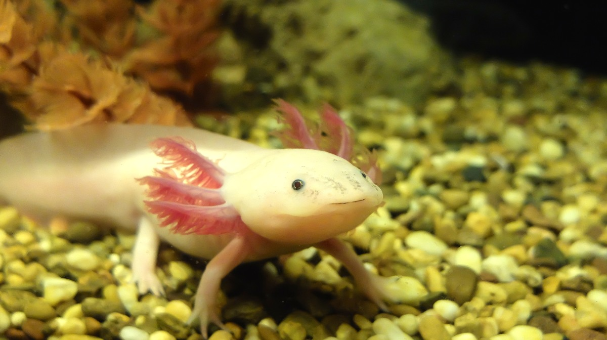
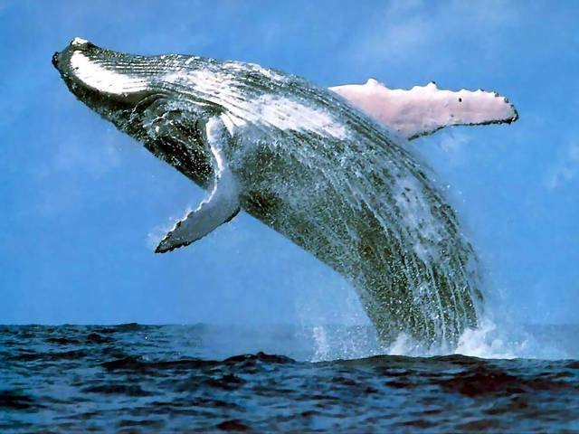
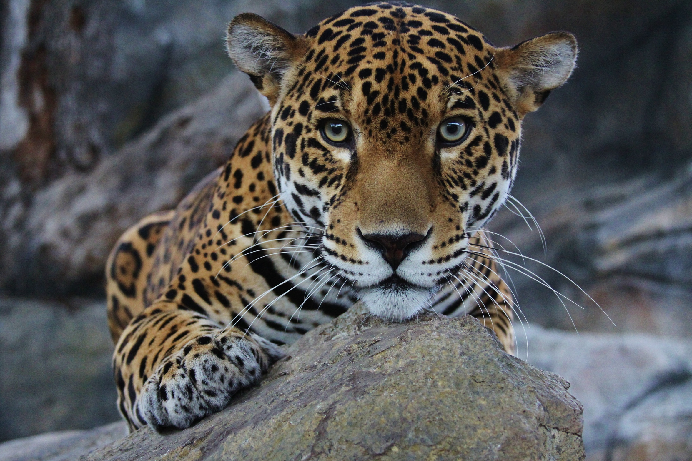

El ajolote originario de xochimilco peligro en extincion.
el ajolote, originrio de xochimilco es un anfibio en peligro de extincion
el ajolote
puede generar su corazon cerebro y extremidades sin dejar cicatriz.
tiene branquias con plumas
en la cabeza y se pasa toda su vida en el agua es
de color rosa o blanco y puede
generar sus patas si las pierdes

Las ballenas es mamifero que habitan en todos los oceanos.
La ballena es un mamifero mas grande del mundo y vive en todos los oceanos Aunque vive en el agua
respira aire y tiene que subir al superficie. se alimenta de krill y
peces pequeños, esta ballena azul
puede medir mas de 30 metros estan protegidas porque
durante años fueron cazadas

El jaguar es un felino en peligro de extincion vive en selvas y bosques de america
El jagar es el felino mas grande de america y uno de los animales mas importantes de los bosques tropicales.
tiene un pelaje amarillo con manchas negras una mandibula muy grande y fuerte
Actualmente es ta en peligro de extincion
debido a la caza ilegal y la destruccion de su habitat
causada por la tala de arboles y la expansion humana
el juaguar
es fundamental para mantener el equilibrio de la naturaleza ya que controla la poblacion de otras especies en la selva.

El pinguino de galapagos es un animal en peligro de extincion vive en las islas galapagos
este animal es una de las especies de pinguinos mas pequeñas del mundo y el unico que vivecerca
de la linea del ecuador, tiene plumaje negro y blanco, alas adaptadas para
nadar y gran habilidad
para pescar en el mar. Actualmente esta en peligro de extincion
debido a cambio climatico, la
contaminacion y la falta de alimento causada por el calentamiento de las aguas.
este pinguino
habita principalmente en islas galapagos y es importante para el equilibrio del sistema marino...